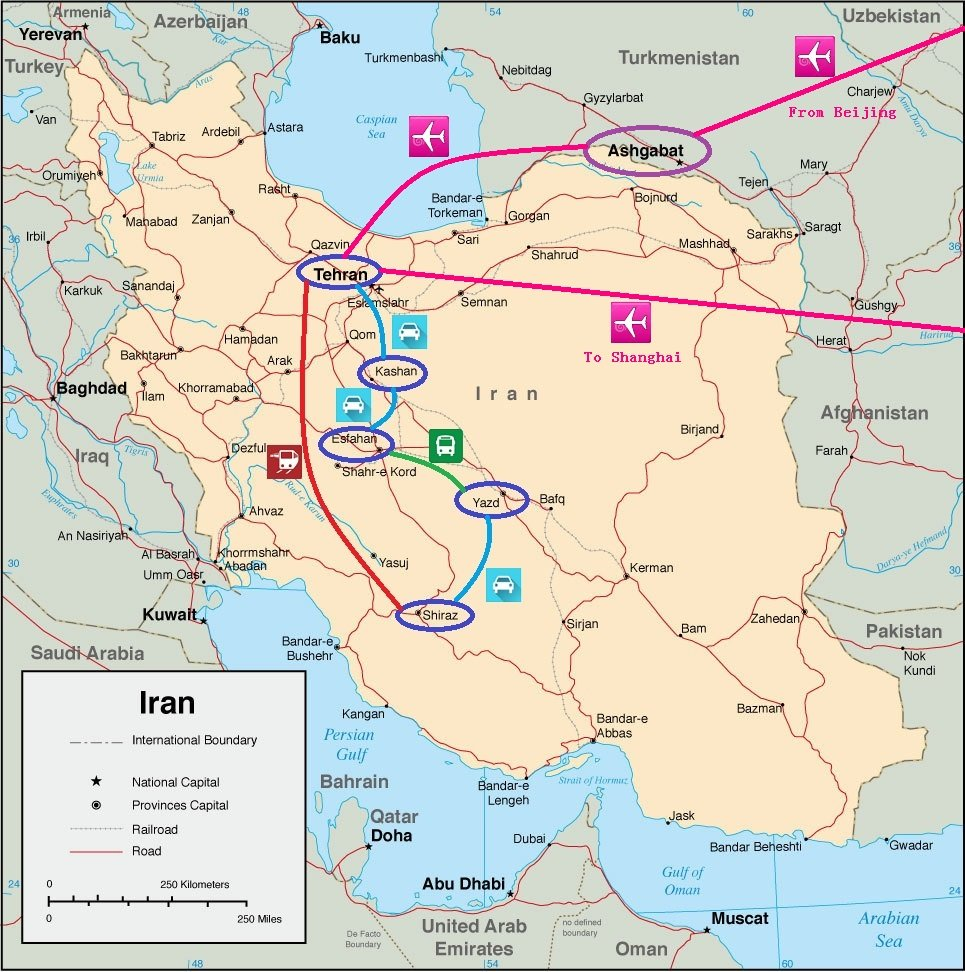
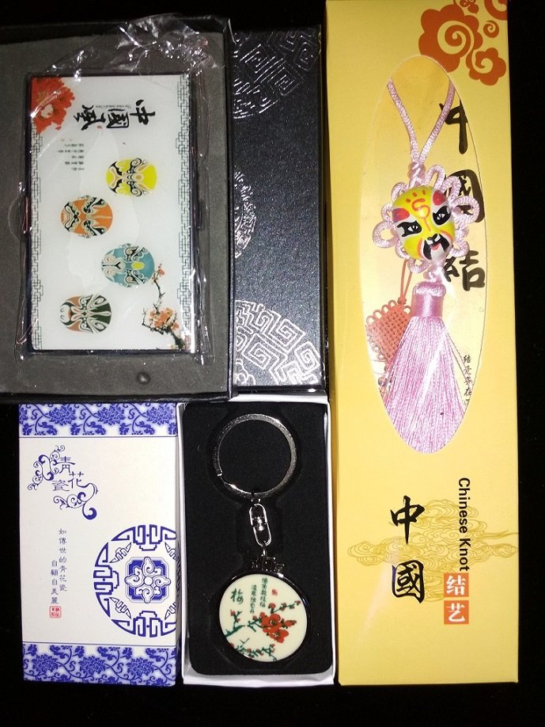
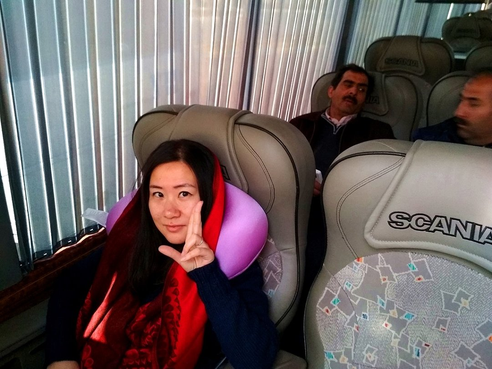
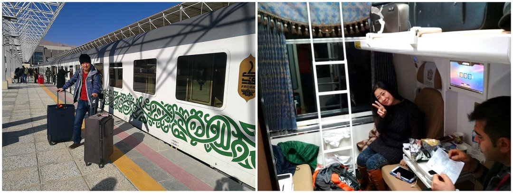
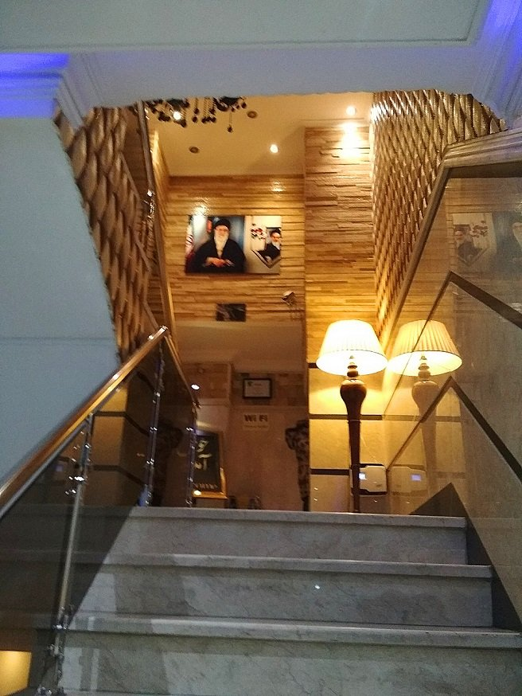
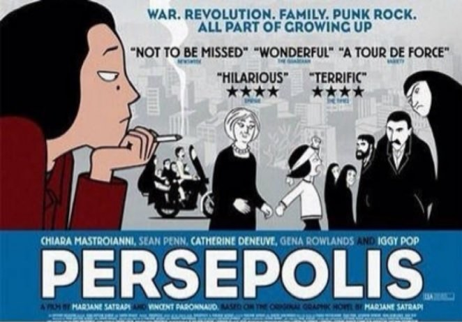

恐怕这是我们最为坎坷的一次旅行
战火中东，印象伊朗那里很危险，这个城市到处都是眼线，时时刻刻注视着你，搜寻着你；在任何时候，你都有可能会被发现。肮脏的街头，暴乱的人群，穷凶极恶，黑眼睛深眼眶的中东男子；纳菲西书中那个飞弹横流的傍晚，那个侦察兵闯入家中逮捕犯人的午后。对于一个尚未走进的人，都可能是个致命的打击。 ——《逃离德黑兰》
说来，和过去不同，通常我们都会确定一个目的地，然后再确定机票，而去伊朗，却纯粹是因为看到去年秋季南航的大促价格比较诱人这才临时起意张罗的旅行。单人往返只有2100多元怎么看都是很不错的价格，作为一个历史文化深厚的国度，伊朗也有着足够的魅力。而时间放在寒假也是主要考虑女儿在家的托班安排。其实如果出发时间早些，在现有的价格上还能每人再减去200，若是再晚些，则也可以和春节假期合并一起，显然可以省下不少年假。不曾想，最后选定的这个时间却成为了一系列波折的起点。
最初预订的机票是1月26日晚上10点多的飞机到北京，次日转机经停乌鲁木齐晚上到德黑兰，回程是在2月4日从德黑兰出发在乌鲁木齐转机回上海。不知何故，后来这几个航段都纷纷收到了南航的调整信息，最终出行的时候，几乎所有航段都做了微调，尤其是回程已被延迟到了2月5日，我倒也是欣然接受，想来年假还是有多，在伊朗多呆一天没啥不好。时至今日看来，若非这多出的一天，想要不留太大遗憾得走完伊朗这一程，还真是无法完成的任务。
因为出发的日期和公司的年会是同一晚，所以当同事热闹得奔赴年会场地的时候，我和宝已经拖起行李奔赴机场了。意外毫无征兆得到来了：许久没有犯胃疼的宝在出发一刻却突感胃部不适，状况在我们抵达北京首都机场之后变得愈发严重。按宝的说法如果最终诱发了胃炎发作，恐怕整个伊朗之行也就岌岌可危了，即使只是目前状态，第二天恐怕也是只能静养无法剧烈走动，至少那个时候连我已经做好心理准备，可能真要放弃在北京的行程了，好在最后只是虚惊一场。虽然至今都想不明白究竟是什么引发了这次的胃疼，但这就像是一个征兆，为此行从未预料的磨难打上了伏笔。
更为严酷的遭遇终于到来了--周六北京飞乌鲁木齐一切正常，乌鲁木齐经停后略有延迟也算按计划起飞了，看似一切波澜不惊，数小时飞行后还有一小时即将抵达目的地德黑兰，机场广播却突然响起，通知因为德黑兰突降大雪，地面条件不符合降落要求，飞机备降在了土库曼斯坦的阿什哈巴德。这从未预料过的变故彻底打乱了我们的行程计划，最后在焦虑不安之中，我们在土库曼斯坦的机场里度过了接近40小时，使得原计划在伊朗驻足的9天9晚有余，一直缩水到了不足8天7晚。为了仍能大致完成原本的旅行目的，我只能决定动刀全面更改原始计划。虽然最终留下的遗憾并不太多，虽然接踵而来的紧凑感替代了最初想要的闲适，但还是比较圆满得完成了五座城市的精彩游历。如此迫于无奈得被动调整确实让我颇费心力，也许唯一值得庆幸的是，当那样看似遥遥无期的等待终止的时候，我们还算有留有最低限度的时间去追赶进度；而正因为伊朗作为一个被制裁的特殊国度，食宿交通出发前都只能邮件预订，无法也没有预付，所以计划调整带来的纯经济损失接近于零，换做任何一次曾经历的旅行，这都不可想象。这也许算是个奇迹吧。
路线行程：
限于时间，最初考虑了包含常规五城的四套方案，最终权衡之下选择了德黑兰-设拉子-亚兹德-伊斯法罕-卡尚的逆时针方案。主要源于如下的考虑：
A. 各景点的作息各有不同，德黑兰的景点有的是周日关闭有的则是周一，需要合理错开，而周五是传统的礼拜日，所以很多清真寺都不对游客开放，最好是走郊外线路，同时和别国不同，伊朗的休息日是周四周五，也需要考虑此时公共交通的紧俏度。
B. 需要尽可能得把白天留给游览，最终德黑兰-设拉子之间的过夜火车，伊斯法罕-卡尚，以及卡尚-德黑兰机场之间的包车都在落日后进行，相对利用率较高。只有亚兹德到伊斯法罕的大巴安排在中午时分，而设拉子到亚兹德的全程包车则是无可避免的。
C. 霍梅尼机场位于德黑兰和卡尚之间，从卡尚折回交通拥挤德黑兰再返回机场的计划都显得效率颇低，不若直接从卡尚直达机场，如此这般，德黑兰的日程必须最早进行。
行李准备：
如此这般的琐碎细节，坦率得说在此前的旅行游记中，我从未提及。但这次旅行提前的准备着实帮了大忙，也许常会是无用功，但当意外发生时才知如此重要。
随身行李挽救了在土库曼斯坦的昼夜：我从未料到会有备降的发生，更没有预料到备降会如此之久，幸而随身行李中携带了所有卫生用品，充电宝和充电接口，以及pad中提前离线准备的海量电视剧，以及那个曾觉得体积大又不实用的睡眠头枕。这些物件的准备，在无法拿出托运行李的阿什哈巴德机场航站楼中，简直犹如救命般得存在，当别的旅客正蓬头垢面看着电量殆尽又无法联网的手机一筹莫展，不知如何打发时间的时候，我和宝正踩着清爽的拖鞋，洗漱完毕安坐着一起观看完近二十集的《军师联盟》。
提前准备的小礼物: 除了曾经去葡萄牙约见葡国朋友时候有带过礼物，其实旅行中携带礼物一直不在我的选项之内。但这次不同，我提前准备了近二十份小礼物，包括了价格不等的中国结，中国风钥匙圈和名片盒。因为早就耳闻伊朗普通民众极度热情和善意，当旅途中遇见那些令人感动的友善和帮助的时候，除了微笑和感谢，我们还能做什么？莫非只能依靠那些落入俗套而不毫不走心的货币来表达内心感受吗？每当此时，或许一份价值微薄但满含心意的小礼物却更能恰当好处得诠释一切。事实上，在伊朗我们一共送出了十几分礼物，每当看到人们得到礼物后惊喜万分而又频频回首表示万分感谢的神情，便会明白，这里朴实的人们多么渴望外面世界的善意以待。
带上GPS,即使没有自驾的计划: 我的手机和Pad里一直装着MAPS ME，这是一直以来的旅行习惯。当在各个城市，尤其是亚兹德，卡尚这样老城徒步行走的时候，手机GPS可以很好的进行定位，那些曲折复杂的街道绝对如同迷宫一般，纸质地图几无用武之地。而即使包车，司机对于目的地城市酒店的了解常常并不完整。例如赶往卡尚和亚兹德预订酒店的路途中，我们的司机显然无法顺利找到最终目的地，都是最后仰仗我自带的MAPS ME进行离线导航，虽然我也见到过司机有装Google Map的APP，但很少见到他们使用，即使偶尔查看也是很快关闭了网络，或许是因为伊朗的网络费用昂贵？总之，真的完全把希望寄托在司机身上是不切实际而天真的。当然由于伊朗的英语普及率和水平并不太高，有必要加装Google翻译的APP，以便可以进行简单的交流。
交通状况：
曾经现代化过的伊朗并不是一个落后的国家，所以公共交通还是值得选择的，这尤其体现在城际大巴上，我们在亚兹德到伊斯法罕的路途中选择了VIP大巴，车内座位极为宽敞还有点心附送，更为关键的是价格很是贴心。当然如果从方便和节省时间的角度考虑，城际间采用包车也是不错的选择，而对于城市的周边游，包车更是不二的选择，考虑到伊朗国内的平均月收入只有2000人民币左右，这还是在女性就业率很低的状态下，也就是这点钱需要负担全家人的开销，因此人工很低。游客们给出的包车费用对当地人来说已经是颇为丰厚的收入。所以这是一个适合包车旅行衔接适度城际公共交通的国度，反倒是自驾由于波斯文的读写困难，并不太合算。
亚兹德到伊斯法罕宽敞的VIP巴士
关于包车，这里可以推荐一个腼腆的伊斯法罕青年(MikaeelMikapuzzleman@gmail.com)，法学专业毕业，阴差阳错做了黑导，但显然他内敛的性格并不是最合适这份讲求脸皮厚度的工作，没有正经的名片，就连讲个价都没个主意，被我牵着鼻子走。但是个有教养，有思想的无神论者，车子虽然比较旧，但这个老实孩子还是可以吃苦值得信赖的，价格也不贵。有兴趣的qyer可以pm我具体的信息 。
另外，德黑兰与设拉子之间很多人都会选择飞机，而我们则尝试了更为便宜的过夜火车旅行，夕发朝至，时间不错，可以省下一晚房费，还可以和当地人打成一片，是了解伊朗风土人情的极好机会。伊朗这条线路上的Fadak列车据说是中国制造的，有四人和六人包厢，虽不像芬兰那样有双人房和独立卫生设施，但列车非常干净整洁，值得一试。
一定还要多说一句伊朗的路面交通，汽车行驶那怎叫一个乱字了得，已无法用言语形容，过马路绝对要提起十二分的精神，讲求“快准狠”，否则永远到不了对岸，这也是我唯一见有人写过“过马路攻略”的奇葩国家。
住宿安排：
这算是伊朗之行的“特色”所在了吧，鉴于伊朗被制裁的状态，此前旅行中经常使用的Booking, Agoda, Priceline, Airbnb等等预订网站全部趴窝。如果不想到了当地直接walk in的话，提前预订的唯一方法就是倚仗网上攻略游记给出的酒店信息，当然通过Tripadvisor也能提供不少的帮助，除了给出更多的房源选择，也可以通过阅读评论搜集有关的房价信息，酒店设施图片，及其他关注事项。无论如何，如果“佛系旅行”的打算，伊朗的住宿准备绝对是件劳心劳力的事情。在反复对比之后我做了如下的选择，难得一次开篇做个综述吧。
德黑兰- Hotel Markazi Iran, 开价72USD,邮件还价后62USD成交，最初预订了两晚，都miss了之后，临时walk in以原来商定价格入住，酒店一口答应，服务还是可以的，就是Wifi的一护照一ID的管制比较严格这点比较麻烦，房间外信号弱，位置方便，地处市中心，距离地铁的距离也很近。入住的时候，眼见似乎有很多中国游客选择了这里。房间略小，但在德黑兰这样房价高昂的地区，似乎也不太有更高性价比的选择。邮件地址：hotelmarkazi@gmail.com
设拉子- Raz Traditional house,最后谈价到35USD , 包含到火车站的pick up。虽然这个价位很便宜，但相对旺季并没什么折扣，选择这家是因为他家报出的设拉子到亚兹德的包车价只有85USD，非常有竞争力。恰巧原本在设拉子心仪的酒店邮件因为Big China局域网无法联系上，而Raz紧邻粉红清真寺的位置也是加分不少。虽然最初邮件联络的时候对Raz的店老板在价格问题上的花腔有些不快，但实际入住的感受还是不错的，这间小民宿的住宿条件设施谈不上多好，位置也不好找，但七彩的窗玻璃，精致的小庭园还是很漂亮的，至少宝挺喜欢。邮件地址：raztraditionalhouse@gmail.com
货币花费：
这次旅行的花销出乎意料得少，10天两个人总开销大致在1.53万左右。
A.首先机票是南航大促时购入，两人总共4262元，非常便宜，为此行的预算节制贡献良多。签证费两人1532元，通过百程办理。加上在北京转机，小逛一圈帝都花费的700大洋，以及其他在沪支出的交通，礼品等杂费。人民币支出一共在6700作用。
B.在伊朗全部是现金交易。1月29日，我们到达德黑兰时按前人的功略在机场2楼用1600美元兑换了里亚尔，结束时换回人民币（当晚美元已售罄）折合250美元。这还是在后期花销毫无节制，且承受了不少汇率损失的状况下，伊朗国内花销1350美元。在机场我们兑换的汇率是45300，看来近几年不断恶化的伊朗国内经济形势还是导致了里亚尔的急剧贬值，折算每万里亚尔只值1.4元人民币，想想去年10月的时候，有人还想以每万里亚尔兑换2元人民币的价格换给我些伊朗币，当时没成交，如今看来却是唏嘘不已。
其中，酒店住宿一共6晚333USD，过夜火车和一程的城际巴士66.5USD（3M IRR），包车总计290USD （包括了设拉子周边到亚兹德85，亚兹德周边游52，伊斯法罕到卡尚48，卡尚周边及直达机场105），作为淡季的冬季，包车住宿等都有不少的议价空间。
C.讽刺的是，在土库曼斯坦的两昼夜也是“出力良多”，为我们此行省下了不少原本计划中的吃用住行的费用，也算是无奈之下唯一的亮点吧。
纵横古今历史文化的功课： 我始终认为有深度的伊朗行，并非是简单得停车拍照上车睡觉加上朋友圈的炫耀。这里没有秀丽的山川风景，更不再有童话般的王子公主。有的只是深沉的历史，有华贵，有荣耀和骄傲，也是苦难，是愤怒和抗争。旅者当然可以选择在粉红教堂七彩的光芒下摆弄身姿，也大可以在阳光下与波斯波利斯宏大的遗址一起留下纪念影像。但千万不要忘记去触及这个浩瀚数千年历史的伟大国家灵魂深处的那些执念，那些深刻和震撼可以在未来无数年中仍然时时叩响自己关于波斯，关于伊朗这一片土地上曾驻足的那些时间和记忆。于是我是带着对近中东近几十年时局的多年的观察了解上路，在行前也尝试着去翻阅《波斯帝国史》，或Marjane Satrapi笔下的电影《Persepolis》等各类作品。于是，我看到了不一样的伊朗，那些残破的，被人们称为坑爹的，甚至从美学角度来说不值一提的景观，却在我眼中成为绝对不容错过的，意义深远的存在。我不是艺术家，从不为摄影而来。我只是阅读者，用眼睛阅读着这古老帝国的今生前世。
从小女孩Marjane的视角审视面纱下国度的复杂思想和面孔
补充一句，虽然身处四战之地，国境四方多有战乱国家：巴基斯坦，阿富汗，伊拉克等等，但伊朗自身是非常安全的，尤其是旅游城市。因此大可不必担心，今年年初因为鸡蛋价格引起的全国性示威已经过去，虽然民怨只是暂时被压抑，但短期之内国家机器的强力压制之下，在伊朗的旅行并不会被太多打搅。
总而言之，以文化和历史作为特色的伊朗旅行，相较于走马观花，拍照观光与当地人群隔绝的团队旅行，闲适而深入的自由行自然显得更有意义。